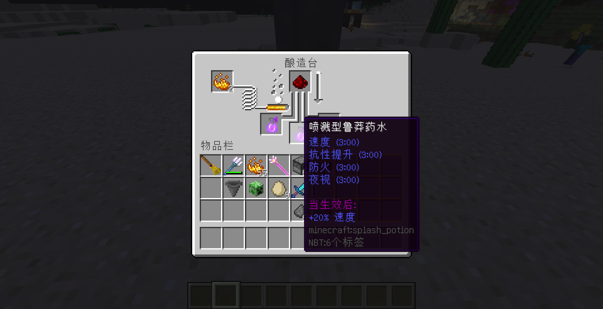
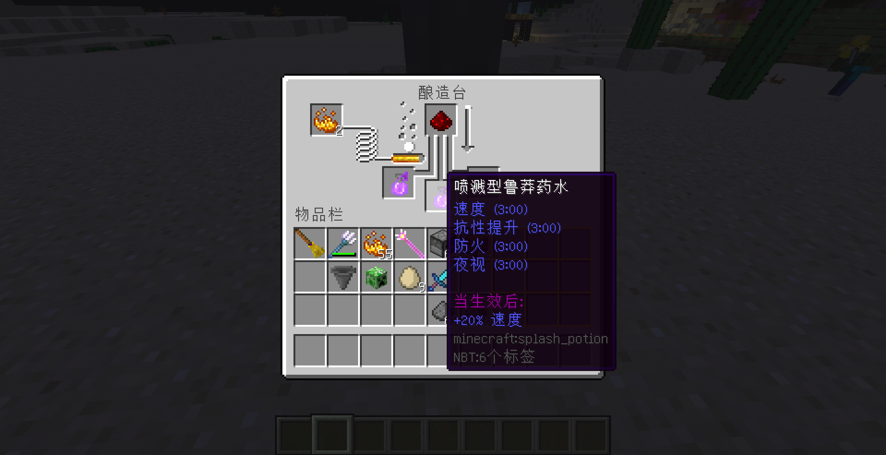
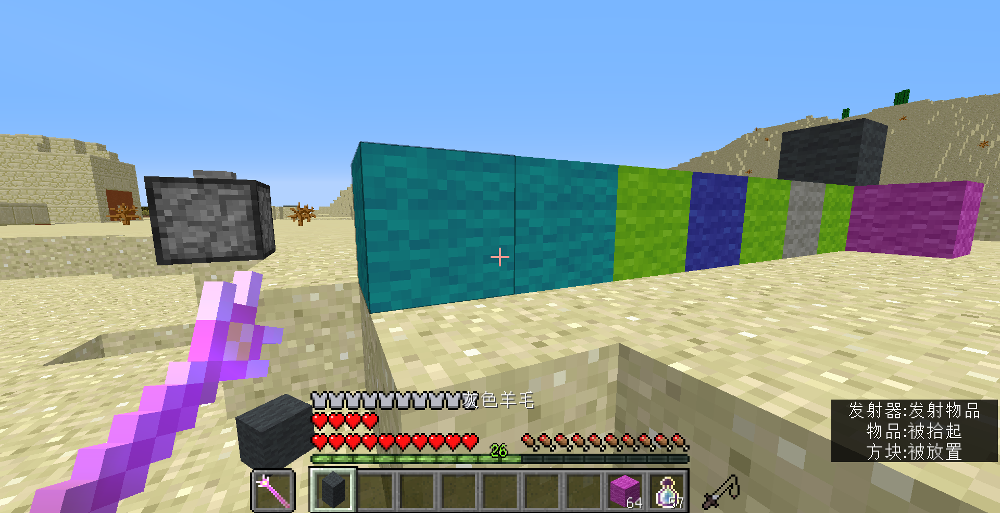
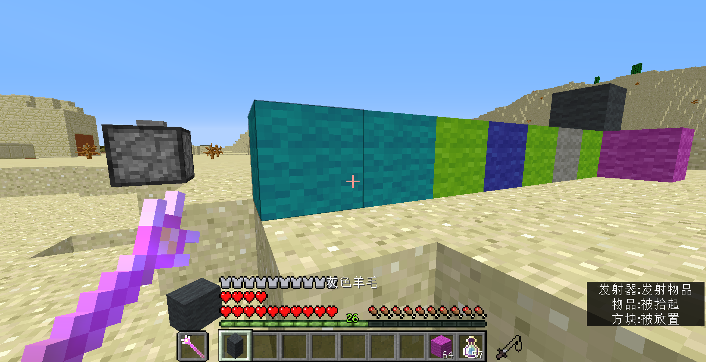

| 1.0 |
2016年08月05日 |
新增羊、牛、鸡、猪、兔子、哞菇、蝙蝠、鱿鱼、村民、北极熊、蠹虫、
潜影贝、骷髅、凋灵骷髅、女巫、僵尸、僵尸猪人、史莱姆、岩浆怪、恶魂、烈焰人、蜘蛛、洞穴蜘蛛、爬行者、高压爬行者、末影人、末影螨、远古守卫者、
守卫者、马、驴、豹猫、狼共33种怪物蛋的合成。 |
| 现在活塞可以回收剑、镐、盔甲、矿车、马铠，制作煤炭、钻石。 |
| 新增“放置 地标”和“回到 地标”，可用于在主世界传送。 |
| 新增物品松散的石头、疏松的石头、普通的石头、紧密的石头、致密的石头，可以用来制作剑、镐、盔甲和地标。 |
1.1
美化更新 |
2016年08月05日
18×6×11 |
现在活塞可以回收花岗岩、闪长岩、安山岩以得到下界石英。 |
| 将松散的石头、疏松的石头、普通的石头、紧密的石头、致密的石头更改为精制煤、精制铁锭、精制金锭、精制钻石、精制下界之星，去掉所有关于密度的描述。 |
| 修改“回到 地标”合成配方，种类数由9减少为8。 |
| 模组更改为相对坐标，合成方式由投掷器修改为玩家背包。 |
| 精简代码，增加了封装和开关。 |
1.2
实体更新 |
2016年10月02日
18×6×11 |
游戏本体版本升级为1.11，不再支持1.11之前的版本。 |
| 新增唤魔者和羊驼刷怪蛋的合成。 |
1.3
效率更新 |
2016年10月08日
13×10×13 |
新增精制矿物合成锹、斧、传送球。 |
| 删除地标。 |
| 新增高级药水的合成。 |
| 模组名称更改为“更多的合成”。 |
1.4
工具更新 |
2016年10月13日
13×11×12 |
现在活塞可以回收鞍。 |
| 新增物品强力磁铁、矿物探测、渔网。 |
| 精简代码。 |
| 现在模组开关被破坏后可恢复。 |
| 1.4.1 |
2016年10月17日
13×11×12 |
添加模组专用材质，包含背包合成区域GUI的修改、标语等。 |
|---|
| 修复bug。 |
1.5
结构更新 |
2016年10月24日
13×13×12 |
新增生物鸟和鸟刷怪蛋的合成。 |
| 现在粘性活塞可以代替活塞参与回收。 |
| 新增建筑：铁匠铺、沙漠神庙、末地船、遗迹、图书馆。 |
| 新增植物：橡树、云杉树、白桦树、金合欢树、灌木。 |
| 新增画：呐喊、蒙娜丽莎、最后的晚餐、向日葵、日出·印象、阿让特伊莫奈花园里的卡美伊·莫奈和孩子、春、夏、秋、冬。 |
| 修改药水名称和颜色。 |
| 矿物探测时长由8秒修改为5秒。 |
| 修改盔甲合成配方。 |
| 精简合成代码。 |
| 1.5.1 |
2016年10月25日
13×13×12 |
修改精制矿物、矿物探测器、遗迹的合成配方。 |
|---|
| 调整命令方块的循环方式，通过降低合成速度来减少卡顿。 |
| 修复bug。 |
| 1.5.2 |
2016年11月12日
13×13×12 |
修改精制矿物合成的工具附魔次序。 |
|---|
| 修复盔甲不能正确提供护甲的bug。 |
| 取消精制靴子的速度效果。 |
| 新增物品强力时钟，增加100%的速度。 |
| 新增画：星夜、自由引导人民、拾穗者、落霞孤鹜图、竹石图。 |
| 增减了材质的一些标语。 |
1.6
科学更新 |
2017年05月12日
681 KB |
游戏本体版本升级为1.12 pre，不再支持1.12之前的版本。 |
| 不再支持使用粘性活塞回收。 |
| 新增回收斧锹锄。 |
| 调整所有回收产物为1。 |
| 修改压制钻石配方。 |
| 新增压制鞍、蜘蛛网、马铠、粘土、浮冰。 |
| 删除鸟刷怪蛋，增加鹦鹉、卫道士、幻术师刷怪蛋的合成。 |
| 恢复精制矿物合成材料为需要使用低一级的精制矿物。 |
| 修复了精制煤炭的名称。 |
| 调整锹的合成形状为通常形状。 |
| 修复了剑和护腿不在对应槽位也有属性加成和护腿的盔甲错误。 |
| 为精制矿物合成的剑添加了横扫之刃魔咒。 |
| 调整传送的距离为200米。 |
| 为强力磁铁加入冷却，时间为5秒。 |
| 修复矿物探测器和传送球的漏洞。 |
| 新增附魔金苹果的合成。 |
| 删除了建筑和植物的合成。 |
| 新增树种的合成，放置在羊毛/树叶可以得到不同的树。 |
| 修改画的合成配方。 |
| 删除了画：春夏秋冬；增加了画：岩间圣母、创造亚当、伏尔加河上的纤夫、开国大典、无名女郎。 |
| 增加24种进度。 |
| 有几率天然生成高压爬行者。 |
| 增加僵尸猪掉落物0-1猪肉。 |
| 增加僵尸村民被玩家杀死时掉落0-1绿宝石，不受抢夺附魔影响。 |
| 增加村民掉落物0-4绿宝石。 |
| 增加驴、骡、马、羊驼掉落物1-3生驴、骡、马、羊驼肉（属性同羊肉）、鹦鹉掉落物1-2生鹦鹉肉（属性同鸡肉）、北极熊掉落物1-4生熊肉（属性同牛肉），着火时掉落对应熟肉。 |
| 增加哞菇掉落物3-5红蘑菇。 |
| 鸡、鹦鹉着火时死亡将不掉落羽毛。 |
| 唤魔者掉落物不死图腾修改为金色。 |
| 新增钓鱼宝藏湿海绵；新增钓鱼垃圾火药，和腐肉等权重。 |
| 移除了模组所需的命令方块，改为使用函数实现。 |
| 修改了材质的文字部分。 |
| 修复了GUI材质透明错误。 |
| 1.6.1 |
2017年05月13日
681 KB |
现在可以一次性回收64个安山岩、闪长岩、花岗岩，16个石英块，64个木炭。 |
|---|
| 现在可以一次性合成8或64个精制矿物。 |
| 修复无法回收石英块的错误。 |
| 修复了仍能使用粘性活塞回收的错误。 |
1.7
重组更新 |
2017年06月07日
861 KB |
游戏本体版本升级为1.12，不再支持1.12之前的版本。 |
| 移除精制矿物系统。 |
| 将模组划分为活塞工艺、生物制药、绘画雕塑、强化系统、交通设施、角色装饰、进度和其它共8个部分。 |
| 移除木制品和石制品的回收。 |
| 新增回收地狱疣块。 |
| 修改钻石、强力时钟、强力磁铁、矿物探测器、渔网、传送球的合成配方。 |
| 移除强力时钟。 |
| 新增时间调节器，放置在物品在展示框时，随机刻由3增加至6。 |
| 新增闹钟，放置在物品在展示框时会每小时（实际时间每50秒）字幕报时。 |
| 移除饱和药水。 |
| 交换急迫药水和抗性药水配方。 |
| 修改抗火药水、夜视药水、隐身药水、水肺药水的持续时间为16分钟。
|
| 新增8种矿石种子的合成，种下后生成一个生命值为1的潜影贝，平均每隔5分钟会用矿石替换顶部的牺牲品，每个种子大约可以生产25颗矿石。煤矿石、铁矿石、金矿石、钻石矿石、下界石英矿石、青金石矿石、红石矿石和绿宝石矿石所需的牺牲品分别为石头、煤矿石、铁矿石、金矿石、地狱岩、粘土、青金石矿石、红石矿石。 |
| 修改画“日出·印象”的名称为“印象·日出”。 |
| 新增强化系统，可强化的物品有盔甲、剑锹斧镐、弓、钓鱼竿，从皮革盔甲、木制品、弓、钓鱼竿出发，按指定次序依次消耗8个指定的牺牲品来升级，共20个等级。
不同等级物品拥有不同的名称、材质、魔咒和属性加成。
升级后的物品只有30点耐久，需要消耗经验值来回复耐久度。
各等级牺牲品为燧石、粘土、火药、荧石粉、粘液球、皮革、煤炭、红石、青金石、下界石英、铁锭、金锭、钻石、绿宝石、不死图腾、亡灵之魂、生物之肢、海洋之心、末影之眼、下界之星。
|
| 新增四个等级的道路固化剂的合成，依次在红石块上使用可以得到不同等级的道路，玩家在道路上可以获得相应等级的加速效果。 |
| 新增称号系统，每次杀死生物或进行背包合成玩家可以提高功力，根据功力的不同获得不同的前缀称号。 |
| 新增头饰系统。当头盔位置放置了一个南瓜，而副手为指定的一个物品时，会自动佩戴该物品。一共56款样式，包括空气头盔、矿工帽、绷带、绅士帽、长冠、围脖(16款)、厚围脖、超厚围脖、花(14款)、头上长草(4款)、眼镜(6款)、口罩、犄角、奥特曼(7款)。 |
| 删除、修改、新增了一些进度，修复了一些bug。 |
| 新增村民掉落物0-2绿宝石和3经验值。 |
| 移除僵尸村民的掉落物绿宝石。 |
| 新增物品亡灵之魂，属性同毒马铃薯，为僵尸、僵尸村民、僵尸猪人、僵尸马、尸壳、骷髅、流髑、凋灵骷髅和骷髅马的稀有掉落物，天然出现在沙漠神殿、地牢和丛林神庙箱子战利品。 |
| 新增物品生物之肢，属性同兔子脚，为蜘蛛、洞穴蜘蛛、蠹虫、末影螨和潜影贝的稀有掉落物，天然出现在要塞祭坛、要塞储藏室、废弃矿井箱子战利品。 |
| 新增物品海洋之心，属性同海晶砂粒，为鱿鱼、守卫者和远古守卫者的稀有掉落物； |
| 新增物品飞翔之翼，属性同羽毛，为鸡、鹦鹉和蝙蝠未着火时的稀有掉落物； |
| 新增物品居民之证，属性同绿宝石，为僵尸村民、村民、卫道士和唤魔者的稀有掉落物，天然出现在村庄、林地府邸、雪屋箱子战利品。 |
| 新增物品末影之灵，属性同末影珍珠，为末影螨、末影人和潜影贝的稀有掉落物； |
| 新增物品硝火之烬，属性同烈焰粉，为烈焰人、爬行者、恶魂和岩浆怪的稀有掉落物，天然出现在下界要塞箱子战利品。 |
|
新增牛、猪、羊、哞菇、兔子、鸡、鹦鹉、鱿鱼、马、驴、骡、羊驼、北极熊、豹猫、狼、僵尸、僵尸村民、骷髅、爬行者、女巫、蜘蛛、洞穴蜘蛛、史莱姆、尸壳、流髑、骷髅马、守卫者、远古守卫者、村民、卫道士、恼鬼、铁傀儡、雪傀儡、僵尸猪人、烈焰人、恶魂、岩浆怪、末影人、潜影贝和末影龙稀有掉落物为对应生物的头。 |
| 增加钓鱼宝藏鱼头、鲑鱼头、小丑鱼头和河豚头。 |
| 为模组物品和进度添加了英文支持。 |
| 修改终末之诗为海绵宝宝主题曲。 |
| 添加了一个彩蛋：传送球一次可以合成四个。 |
| 调整了函数的分布，大幅度降低了卡顿。 |
| 1.7.1 |
2017年06月08日
861 KB |
修复了材质中的文字错误。 |
| 修复了称号系统的数据与描述不符。 |
| 修复了强化物品的耐久值错误。 |
| 调整了时间调节器对于随机刻加成由+3变为+1。 |
| 1.7.2 |
2017年06月09日
862 KB |
精简了时间调节器、闹钟的代码。 |
| 增加了闹钟的音效，清晨和傍晚会报时，音效为entity.player.levelup，音量20，音调1.5。 |
| 1.7.3 |
2017年06月15日
863 KB |
修复了制作钻石的配方中错误，应为煤炭却为煤炭块。 |
| 为安装包添加了安装说明。 |
| 1.7.4 |
2017年06月16日
863 KB |
修复了《最后的晚餐》和《落霞孤鹜图》合成后缺少一张的问题。 |
1.8
元素更新 |
2018年5月20日
1109 KB |
游戏本体版本升级为1.13，不再支持1.13之前的版本。 |
| 修改资源包文字的代码名称、记分板、标签前缀为cpp，修改资源包以适应1.13，添加材质。 |
| 移除闪烁标语。 |
| 修改终末之诗为葛底斯堡演说并在结尾添加鸣谢。 |
| 修改下界石英/兔子皮/玫瑰红/蒲公英黄名称为石英/小块皮革/红色染料/黄色染料，并修改了红色染料/黄色染料材质。 |
| 不再给予玩家初始工具和食物。 |
| 移除强化系统。 |
| 删除功力系统，重做称号系统。 |
| 进度系统重新调整。 |
| 增强僵尸、骷髅和爬行者。 |
| 村民可被手持绿宝石块的玩家吸引。 |
| 动物有几率变成黑暗生物，会主动攻击玩家，掉落黑暗碎片。 |
| 下界之星、不死图腾、龙蛋的掉落物形式现在是无敌的。 |
| 在破坏刷怪箱可以获得破损的刷怪箱。 |
| 附魔之瓶将固定掉落4点经验值。玩家在背包合成区域中间放置一个漏斗而其余8格为空时，会自动将4点经验值转化为附魔之瓶。 |
| 调整稀有掉落物的来源。 |
| 新增钓鱼垃圾海晶碎片。 |
| 北极熊不再掉落鱼。 |
| 新增蓝色天之力，右键消耗玩家10点经验依次切换为晴天/下雨天/雷雨天。 |
| 新增绿色水之力，右键放置一格水。 |
| 新增青色山之力，右键消耗玩家25点经验并整地5×5区域。 |
| 新增橙色土之力，右键破坏土质方块。 |
| 新增黄色地之力，右键消耗玩家25点经验并清除附近15×3×15区域中的水和岩浆。 |
| 新增红色火之力，右键烧炼方块成物品。 |
| 新增紫色木之力，右键转换地面的树苗、种子和花，转化比率为2:1。 |
| 新增白色电之力，右键去除地面的物品附魔。 |
| 新增黑色月之力，右键消耗玩家40点经验并在前方铺设泥土道路。 |
| 移除活塞工艺。 |
| 新增机械，沿竖直方向从下往上依次摆放漏斗、相应玻璃、机器核心即可。 |
| 新增压缩机，核心部件为压缩器，可压缩荧石粉、雪球、粘土球、月之碎片、日之碎片、铁粒、金粒、矿物、小块皮革、西瓜片、地狱疣、线、小麦、干海带、粘液球。 |
| 新增阅读台，核心部件为蓝色天之力，消耗各种书产出附魔之瓶。 |
| 新增冷冻机，核心部件为绿色水之力，可制作雪、冰、浮冰、蓝冰。 |
| 新增造石机，核心部件为青色山之力，可制作圆石、石头、黑曜石。 |
| 新增粉碎机，核心部件为橙色土之力，可粉碎矿石、矿物块和一些建材。 |
| 新增反应釜，核心部件为黄色地之力，可制作生物酸、生物碱、粗硅、空气瓶、硅粉、硅板、稀土盐、碱性稀土、稀土粉。 |
| 新增熔炼机，核心部件为红色火之力，可烧炼矿石、钢化玻璃、稀土玻璃、制盐。 |
| 新增孵化器，核心部件为紫色命之力，可繁殖农作物和生物掉落物以及钓鱼。 |
| 新增微型市场，核心部件为白色电之力，可出售物品获得绿宝石和附魔之瓶。 |
| 新增造物机，核心部件为黑色月之力，可制作矿物、附魔矿物、恶魂之泪、月之碎片。 |
| 新增钢粉、附魔铁锭、附魔金锭、附魔钻石、机械核心的制作。 |
| 新增农场核心、疣场核心、林场核心、牧场核心、渔场核心、猎场核心，用于自动化。 |
| 新增破坏之手，放置在物品展示框时，会破坏正上方的方块。 |
| 新增磁铁，右键切换，将附近0/8/16米内掉落物吸引过来。 |
| 新增时间调节器，右键依次切换模式为作物生长速度加倍/作物生长速度恢复/停止日夜循环/开启日夜循环。 |
| 新增报时器，放置于物品展示框后可报时。右键可通过消耗经验自由控制时间。 |
| 新增世界之源，右键消耗20点经验返回世界原点。 |
| 新增压缩器，右键将地面的64个物品压缩，重新扔出可复原压缩的物品。 |
| 新增年长者之教诲，每2.5秒给予拥有者1点经验，放置在末影箱亦可生效。 |
| 新增坐标记录仪，右击记录当前位置，再次右击方块可建立单向传送门。注意一次只能记录一个坐标。 |
| 移除矿石种子、矿物探测器。 |
| 移除附魔金苹果和药水的合成。 |
| 如果玩家食肉过多会行走缓慢，食肉过少会变得虚弱。使用测重压力板可以测量出你的体重指数。 |
| 新增粘土桶、生缤纷菜蔬、生土豆排骨、生土豆牛肉、生兔肉煲、炸鱼薯条、肉松面包的制作。 |
| 新增鸡蛋羹、烤胡萝卜、缤纷菜蔬、土豆排骨、土豆牛肉、兔肉煲、小块皮革、钻石、桶、神秘烈焰粉、神秘兔子腿的烧炼。 |
| 新增鲁莽药水、忍者药水的酿造。 |
| 新增附魔金苹果和拔丝苹果的熬制。 |
| 新增20种材料种子，可种植和杂交。 |
| 新增羊毛树、水果树、矿石树。 |
| 新增魔杖、星之魔杖、节制器、黑暗权杖。 |
| 将特定方块摆放成八边形作为仪式基座，手持魔杖右击发射器，然后等待发射器上符文粒子消失即可执行仪式。 |
| 仪式可用于属性附加、效果附加、附魔书制作、热带鱼染色。 |
| 黑暗仪式可用于腐化仪式、生物增殖、黑暗召唤。 |
| 新增效果附加：潮涌能量/水下呼吸/夜视/抗性提升/隐身/饱和/生命恢复/防火/缓落/速度/跳跃提升/力量/急迫/连锁。 |
| 新增荧光帽，使玩家发光，但是并不提供照明。 |
| 新增非酋帽，自带霉运效果。 |
| 新增护士帽，自带幸运效果。 |
| 新增雪地靴，玩家在雪上会跑得更快。 |
| 新增原谅帽、小红帽、皮夹克、红色外套、紧身皮裤、牛仔裤。 |
| 新增扫帚，在副手时提供漂浮效果。 |
| 移除佩戴头饰所需的南瓜。 |
| 新增头饰海草、珊瑚。 |
| 修改画作实现方式。 |
| 当发射器发射的物品可以种植在前方位置时，会自动种植。 |
| 可使用炼药锅漂白玻璃和陶土。 |
| 使用机械核心和魔杖可实现随机方块。 |
| 信标可用于对生物产生减益效果。 |
| 新增羊毛树、爬行者地牢、图腾柱、附魔室的生成。 |
| 图腾柱宝箱含亡灵之魂/硝火之烬/生物之肢/附魔金苹果/附魔铁锭/附魔金锭/肉松面包/拔丝苹果/煤炭/骨头/火药/腐肉/线。 |
| 修改刷怪蛋的合成为原版合成。 |
| 修改哞菇刷怪蛋的配方为红色蘑菇+皮革+鸡蛋。 |
| 修改凋灵骷髅/唤魔者/卫道士刷怪蛋的合成配方为鸡蛋+煤炭块/金块/铁块。 |
| 修改可驯服生物合成所需头颅为骷髅头颅。 |
| 移除幻术师、高压爬行者刷怪蛋的合成。 |
| 新增幻翼、海龟的合成。 |
| 修改合成得到的楼梯数量为8。 |
| 新增18种台阶和17种楼梯回收为原方块。 |
| 修改合成石英块/皮革所需的石英/小块皮革数量为9。 |
| 新增9个线合成为蜘蛛网。 |
| 新增粘土块、荧石、雪块、西瓜、地狱疣块、蜘蛛网、石英块、皮革的分解。 |
| 现在任意颜色的床均可被染色。 |
| 新增锁链盔甲的合成。 |
| 移除道路固化剂的合成。 |
| 新增4种平滑方块的合成，玩家在平滑方块上可以获得不同的加速效果。 |
| 新增龙蛋、红沙、草径、耕地、草方块、菌丝、粘土的合成。 |
| 移除了木制工具的合成。 |
| 燧石可代替石制工具合成中的圆石。 |
| 新增村民：林业员、书画师、圣诞老人、药剂师、末地使、烟花师、园丁、机械工、潜水员。 |
| 修改牧师出售附魔之瓶的价格为1绿宝石。 |
| 玩家在空岛模式下会开启空岛模块。 |
| 空岛模块下破坏泥土会获得树苗(各1%)或骨粉(4%)，破坏树叶会掉落线(5%)或骨粉(20%)。 |
| 空岛模块下在熔炉上方放置雪块可得到方块粉碎机，可以粉碎其上方放置材料。 |
| 空岛模块下在方块粉碎机上方放置坩埚，然后向坩埚扔入4个圆石或4个雪球，可以制作岩浆或水。 |
| 空岛模块下可使用绿宝石块和雪块制作末地传送门框架。 |
| 空岛模块下添加雪球、鸡蛋、泥土、砂砾的合成，泥土和圆石的转化。 |


 



 
